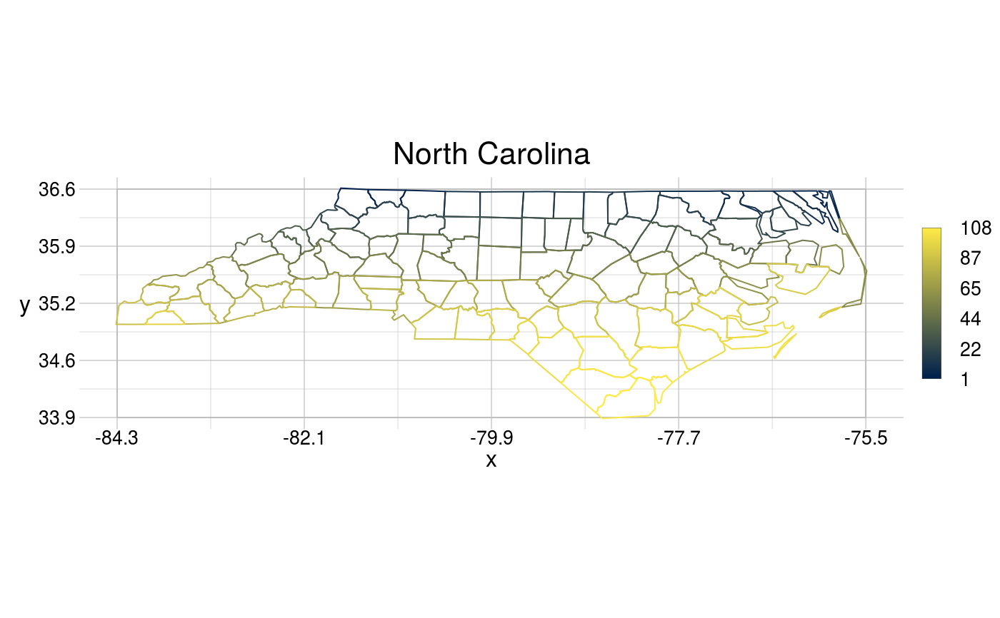
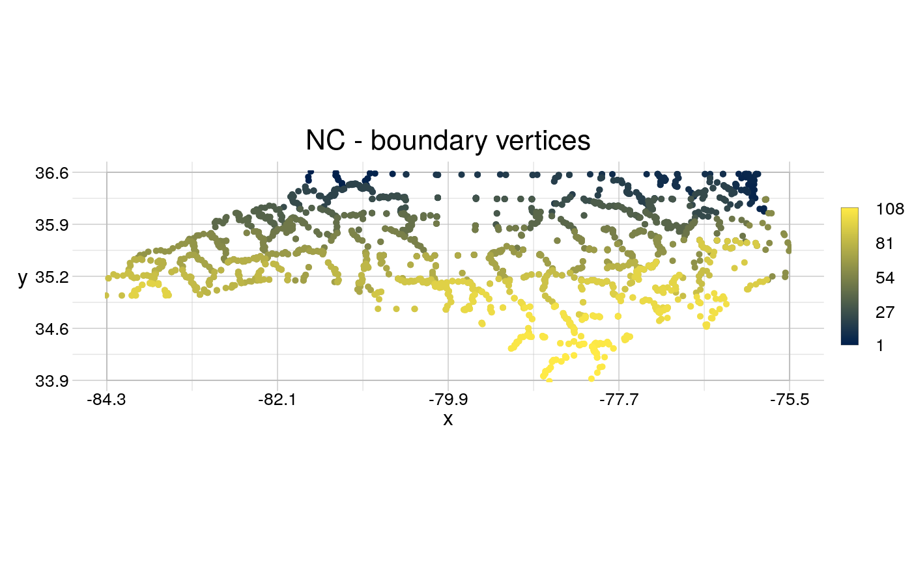

geometr: Generate and Process Geometric Shapes
geometr.RdThe geometr package provides tools that generate and process fully
accessible and tidy geometric shapes (of class geom). Moreover, it aims
to improve interoperability of spatial and other geometric classes. Spatial
classes are typically a collection of geometric shapes (or their vertices)
that are accompanied by various metadata (such as attributes and a coordinate
reference system). Most spatial classes are thus conceptually quite similar,
yet a common standard lacks for accessing features, vertices or the metadata.
Geometr fills this gap by providing tools that have a unified interface and
that produce an identical output (socalled getters), irrespective of the
treated class or that use an indentical input to write to various classes
that require different input (socalled setters).
See also
Github project: https://github.com/EhrmannS/geometr
Report bugs: https://github.com/EhrmannS/geometr/issues
Examples
library(sf)#># A geom can be created from other classes ... nc_sf <- st_read(system.file("shape/nc.shp", package="sf"))#> Reading layer `nc' from data source `/home/se87kuhe/R/x86_64-pc-linux-gnu-library/3.6/sf/shape/nc.shp' using driver `ESRI Shapefile' #> Simple feature collection with 100 features and 14 fields #> geometry type: MULTIPOLYGON #> dimension: XY #> bbox: xmin: -84.32385 ymin: 33.88199 xmax: -75.45698 ymax: 36.58965 #> epsg (SRID): 4267 #> proj4string: +proj=longlat +datum=NAD27 +no_defsnc_geom <- gc_geom(input = nc_sf) # ... or by hand. coords <- data.frame(x = c(40, 70, 70, 50), y = c(40, 40, 60, 70)) window <- data.frame(x = c(0, 80), y = c(0, 80)) aGeom <- gs_polygon(anchor = coords, window = window) # The "tiny map" shows where the vertices are concentrated. nc_geom#> geom polygon #> 108 features | 2529 vertices #> crs +proj=longlat +datum=NAD27 +no_defs #> attributes (features) AREA, PERIMETER, CNTY_, CNTY_ID, NAME, FIPS, FIPSNO, CRESS_ID, BIR74, ... #> tiny map 36.59 #> ◌ ◯ ◌ ◯ #> ◯ ◯ ◯ ◯ #> ◌ ◌ ◯ ◌ #> -84.32 ◌ ◌ ◌ ◌ -75.46 #> 33.88# Information, such as the attribute table, can be extracted from the object # in interoperable quality (i.e. same arrangement of the same information). attr_sf <- getTable(x = nc_sf) attr_geom <- getTable(x = nc_geom, slot = "feat") # However, a `geom` has three attribute tables, one for vertices, one for # features and one for groups of features. All of them (and not only # features) can be filled with ancilliary information. getTable(x = nc_geom, slot = "vert")#> # A tibble: 2,529 x 3 #> x y fid #> <dbl> <dbl> <int> #> 1 -81.5 36.2 1 #> 2 -81.5 36.3 1 #> 3 -81.6 36.3 1 #> 4 -81.6 36.3 1 #> 5 -81.7 36.4 1 #> 6 -81.7 36.5 1 #> 7 -81.7 36.5 1 #> 8 -81.7 36.6 1 #> 9 -81.3 36.6 1 #> 10 -81.3 36.5 1 #> # … with 2,519 more rows#> # A tibble: 100 x 1 #> gid #> <int> #> 1 1 #> 2 2 #> 3 3 #> 4 4 #> 5 5 #> 6 6 #> 7 7 #> 8 8 #> 9 9 #> 10 10 #> # … with 90 more rows# Groups of features are called *multi* features in the simple features # standard. By lumping several closed geometric shapes into one multi\* # feature, the separate geometric shapes can't be attributed with ancilliary # information anymore. In a `geom`, multi\* features are separated into # distinc (simpler) features. The equivalent attributes of a multi\* feature # are captured in the 'groups attribute table' currituck <- getSubset(x = nc_geom, gid == 4) getTable(x = currituck, slot = "feat")#> # A tibble: 3 x 16 #> fid gid AREA PERIMETER CNTY_ CNTY_ID NAME FIPS FIPSNO CRESS_ID BIR74 #> <int> <int> <dbl> <dbl> <dbl> <dbl> <fct> <fct> <dbl> <int> <dbl> #> 1 4 4 0.07 2.97 1831 1831 Curr… 37053 37053 27 508 #> 2 5 4 0.07 2.97 1831 1831 Curr… 37053 37053 27 508 #> 3 6 4 0.07 2.97 1831 1831 Curr… 37053 37053 27 508 #> # … with 5 more variables: SID74 <dbl>, NWBIR74 <dbl>, BIR79 <dbl>, #> # SID79 <dbl>, NWBIR79 <dbl>#> # A tibble: 1 x 1 #> gid #> <int> #> 1 4# ... and it can be cast into another type simply by providing it in # 'anchor' of the respective type. bndPoints <- gs_point(anchor = nc_geom) visualise(`NC - boundary vertices` = bndPoints)